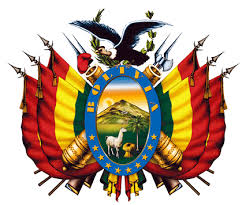

 Bolivia (quechua: Puliwya; aimara: Wuliwya; guaraní: Volívia), oficialmente Estado Plurinacional de Bolivia,9 10 es un país situado en el centro-oeste de América del Sur, cuenta con una población de cerca de 10,1 millones de habitantes.11 Limita al norte y al este con Brasil, al sur con Paraguay y Argentina, y al oeste con Chile y Perú, no tiene salida al mar. Su superficie es la sexta más extensa de Iberoamérica y comprende distintos espacios geográficos como la cordillera de los Andes, el Altiplano, la Amazonía, los Llanos de Moxos y el Chaco, siendo así uno de los países con mayor biodiversidad en el mundo.12
Políticamente, se constituye como un estado plurinacional, descentralizado con autonomías. Se divide en nueve departamentos y mantiene una reclamación territorial a Chile por una salida soberana al océano Pacífico. Sucre es la capital y sede del órgano judicial, mientras que La Paz es la sede de los órganos ejecutivo, legislativo y electoral.
En su territorio se desarrollaron civilizaciones antiguas como Tiwanaku, la Cultura Hidráulica de las Lomas y la cultura moxeña. Primero los incas y posteriormente los conquistadores españoles dominaron el territorio hasta que el país se independizó en 1825. Al haber desarrollado las tradiciones con un mestizaje de las culturas precolombinas con la cultura española, es un país multiétnico y pluricultural, rico en la mezcla y sincretismo de costumbres y tradiciones recibidas de los pueblos indígenas y los conquistadores españoles..
Revolución nacional de 1952
Artículo principal: Revolución de 1952 (Bolivia)
Entre 1935 y 1946, Bolivia es gobernada por militares nacionalistas que habían sido protagonistas de la Guerra del Chaco. Se empiezan a gestar ideas de cambio destinadas a incluir al sector indígena, promover la integración del oriente del país y revertir las ganancias de la minería e hidrocarburos en favor del Estado. Surgen sindicatos de mineros y obreros que se aglutinan en torno a la Central Obrera Boliviana (COB).
En las elecciones presidenciales de 1951, el exiliado líder del Movimiento Nacionalista Revolucionario (MNR), Víctor Paz Estenssoro, alcanza casi la mitad de los votos emitidos. Sin embargo, la élite política-minera trata de impedir la elección de Víctor Paz Estenssoro y el Presidente Mamerto Urriolagoitia entrega el gobierno a una junta militar a la cabeza del general Hugo Ballivián. En abril de 1952, se suceden múltiples levantamientos populares que dan lugar a la Revolución Nacional, proceso de transformaciones en la participación ciudadana, la distribución de tierras, el control del Estado sobre los recursos naturales y la economía boliviana.
Paz Estenssoro regresa del exilio para asumir la Presidencia. Bajo su dirección el gobierno emprende un amplio programa de reformas económicas: decreta la nacionalización de las minas y el monopolio en la exportación del estaño, la reforma agraria (parcelación de tierras para distribuir entre los indígenas), la prospección de pozos petrolíferos por empresas extranjeras, la institución del voto universal (no existía hasta ese momento), la reforma educativa y la vinculación caminera con el oriente (carretera Cochabamba-Santa Cruz).